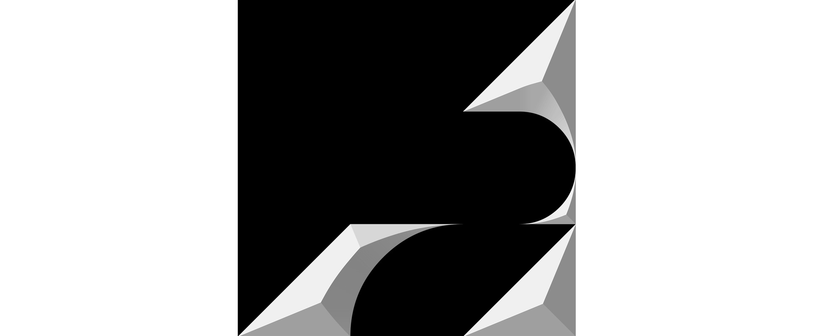

Phoebe Li Portfolio
Application for MC250
Master of Communication Design
Semester 2, 2025
TOOTH
Next: ?
Previous: ?
Typography
A modular typeface constructed using right angled isosceles triangles as a base unit. An inquiry into the relationship between blackletter and glyphic styles, creating structures that feel both jagged and fluid. Inspiration is drawn from the dense, textural quality of blackletter letterforms, yet with a more geometric approach as opposed to ornamental. Though formally a sans serif, its angular modules evoke the sharpness of glyphic letterforms, creating an illusion of serifs.
Uppercase A-Z
